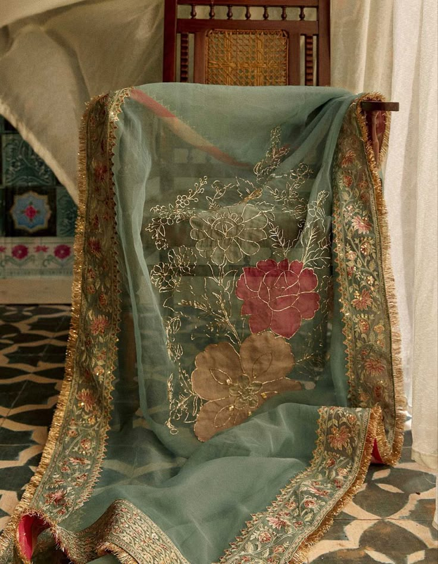
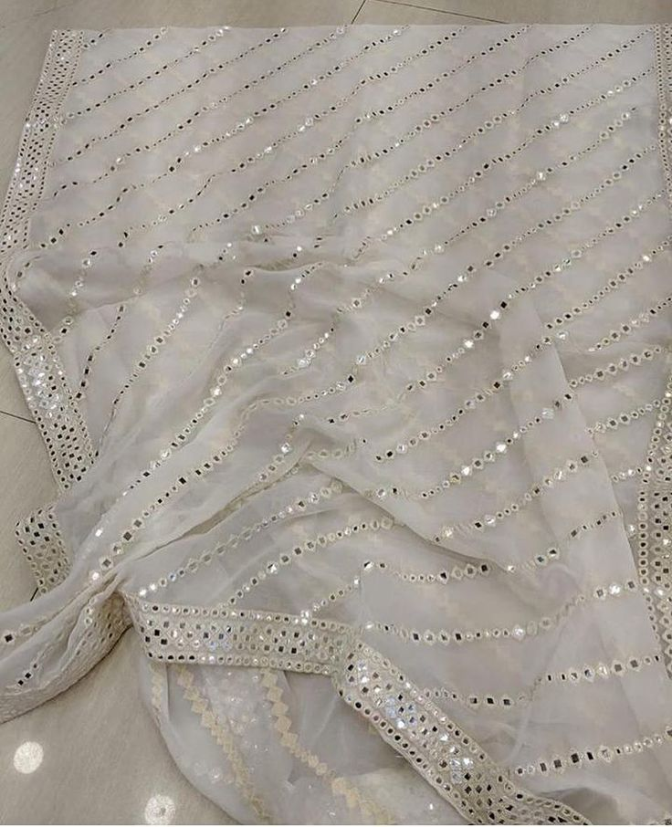
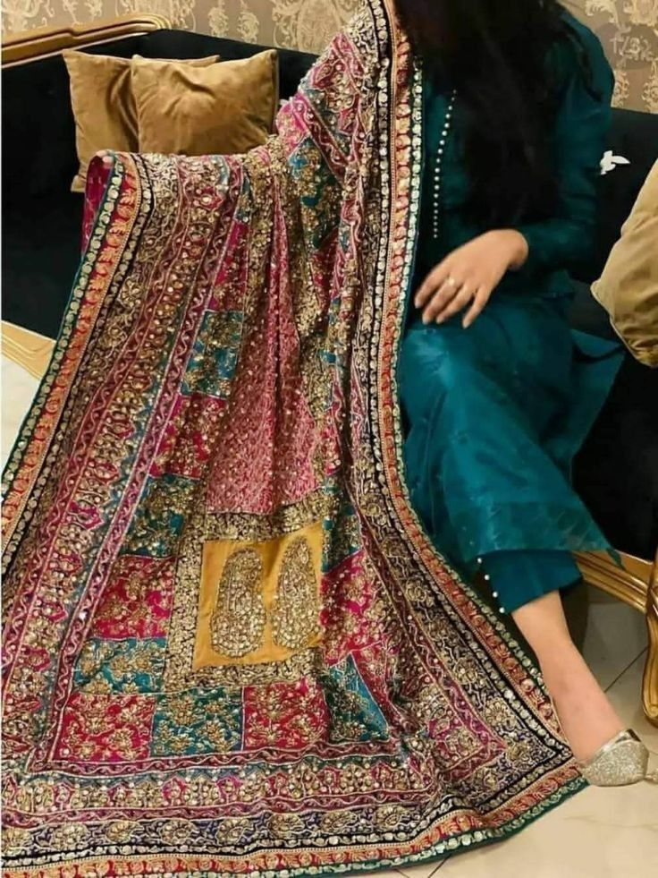

Why Embellished Dupattas Are Trending
With mirror work, sequins, thread embroidery, and gotta detailing, embellished dupattas add instant charm to even the plainest of suits or kurtas. They’re budget-friendly, versatile, and very *desi chic*.

Designers and local brands are offering ready-to-wear embellished dupattas that can mix and match with multiple outfits, making them a must-have wardrobe essential.
